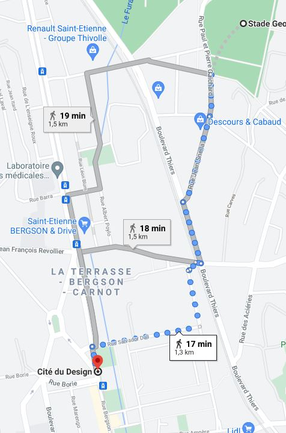

Le prochain lieu est donc la Cité du Design
Le trajet se fait en marchant
Pour atteindre le point suivant vous allez prendre la rue croisant les voies du tramway. Vous passerez très rapidement devant un imposant le logo de l'ASSE. Vous continuerez
sur cette rue puis longerez la voie ferrée. Vous traverserez les voies par le passage à niveau. Vous prendrez la promenade François Blanc sur votre gauche
qui passe devant Telecom Saint-Etienne. Vous arriverez devant un arbre spécial... Juste après celui-ci, vous tournerez à droite et passerez devant l'Ecole
supérieure d'art et design. Enfin, vous rentrerez dans la Cité du design pour en ressortir de l'autre côté. Là se trouve votre point suivant.
